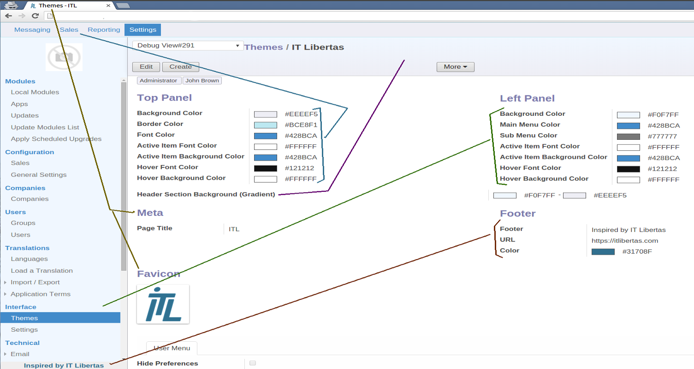
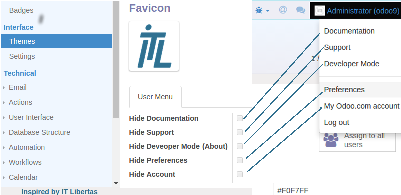
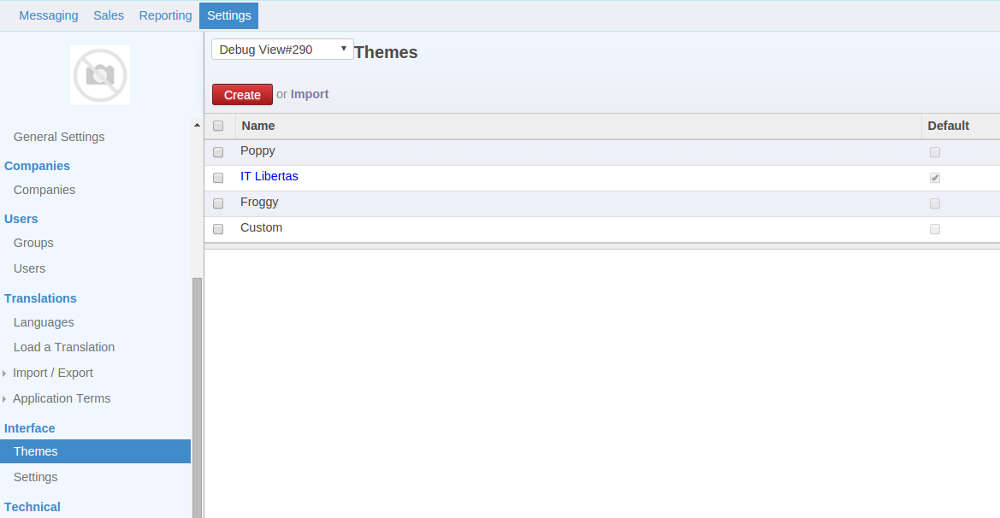
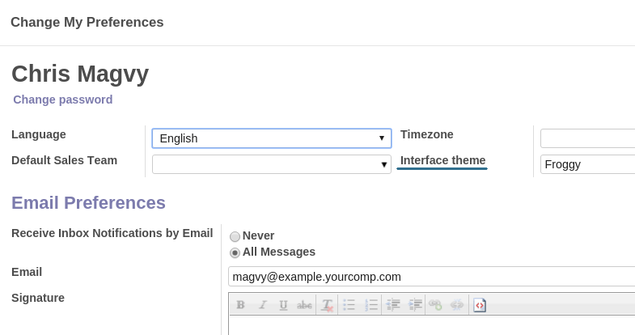

Interface Customization
Individual users' interfaces and mail styles. Debranding
Tested on Odoo 11
Community
. It does not work for Odoo 11 Enterprise
The app goal is to make your Odoo interface (backend) customizable and to remove irritating branding. It allows configuring interface themes which let you:
-
Apply your own styling and colors
by each user individually
-
Replace branding of the Odoo interface and Odoo outgoing emails
-
Configure emails default layout and theme
Features
There may be an unlimited number of interface themes simultaneously
Each theme is applied for each user individually. Thus, users may have different interfaces and user menus. If no theme is selected, default styling would be applied
Let or forbid users to select existing interface themes through 'Preferences'. Anyway, a theme may be changed in a few clicks
You may define a theme which would be default to all new users including portal users
Themes may be added or changed only by user with the administrator rights
Interface Styling
Define the top menu colors: background, border, font, active item font and background, hover font and background
Define the left navigation panel colors: background, font, active item font and background, hover font and background
Define the header section gradient colors for the background
Redefine or fully remove the page title: e.g. "Inbox - Yourcompany" instead of "Inbox - Odoo"
Replace the standard favicon by your own image
Replace standard "Powered by Odoo" with your own footer or fully remove it. You may define footer's content, color and url.
User Menu
You may configure user menu (top right corner) for each user individually
Hide or unhide the menu unit "Documentation"
Hide or unhide the menu unit "Preferences"
Hide or unhide the menu unit "My Odoo.com account"
Hide or unhide the menu unit "Support"
Additional Features
Instead of Odoo standard logo, empty image place holder is shown (in case there was no logo of a company)
No reference to Odoo on a main page of login. Odoo bindings are replaced
Redefine or replace email styles parts: "Sent by YourCompany using Odoo", "View in Odoo", "Follow"/"Unfollow" through Interface settings and the corresponding email template
Interface Theme Simple Creation and Configuration

Set up Preferences Menu

Unlimited Number of Themes in Use

Apply Theme for Each User or for all Users

login -
demo
; password -
demo
To check:
-
1. Go to the preferences and try to change an interface theme
-
2. Go to the menu Settings - Interface - Themes, and try to modify your user's active theme
-
3. Log in with the user demo2/demo2, and make sure that different users may have different interfaces